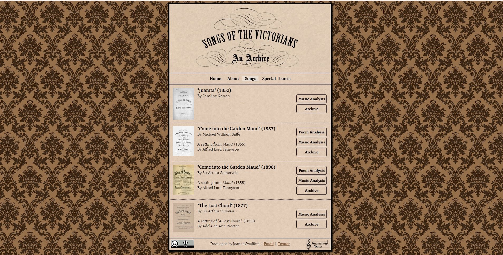
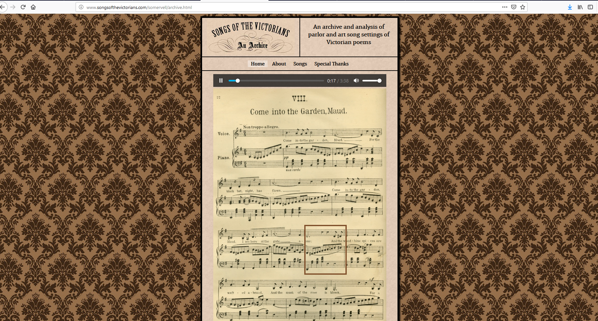

Songs of the Victorians
Abstract
The present review occupies itself with the project Songs of the Victorians, developed by Joanna Swafford, which intends to provide both an archive (of reduced size as of yet) of parlor and art sort settings of Victorian poems, and an analytical tool for the study of the relationship between music and poetry in this neglected repertoire. The project partly delivers on its objectives, namely through its hierarchical but intuitive interface and through the use of the Augmented Notes software (developed by Swafford herself) to provide synchronizations of the original scores with performances of the songs (some of them recorded specifically for the project). The main limitation to the project, however, comes from the fact that it contains only four examples of the repertoire, which makes large-scale comparisons and analysis difficult.
Songs of the Victorians intends to provide both an archive (of reduced size as of yet) of parlor and art sort settings of Victorian poems, and an analytical tool for the study of the relationship between music and poetry in this neglected repertoire (and, potentially, elsewhere). Indeed, the resource’s sole editor, Joanna Swafford, writes in the ‘About’ section of the site that the archive’s aim is to challenge the assumption that the composers of such songs – intended to be performed by women, with piano accompaniment and in domestic settings – were lacking in the sophisticated text-setting skills normally associated with the ‘high’ art song repertoire. The site thus inserts itself within a by now well-established current in musicology that, in looking at music as part of the cultural fabric of its time and not simply as a series of composers and works, aims to question the notion that rigid barriers have always existed between ‘high’ and ‘low music’; an obvious precedent to Swafford’s work is Derek Scott’s The Singing Bourgeois: Songs of the Victorian Drawing Room and Parlour (Milton Keynes: The Open University Press, 1989).
Although not recognized as such in the ‘About’ section, a further aim of the project appears to be to provide a testing ground for Augmented Notes, a tool developed by Swafford itself which allows the visualization of scores for research, teaching and dissemination purposes. Songs of the Victorians was developed under the aegis of the University of Virginia’s Scholars’ Lab, with primary sources coming from The British Library, The National Library of Australia, San Francisco Public Library and others, as indicated in the ‘Special thanks’ section of the site.

As might have been inferred from the image above, the main limitation at present of Songs of the Victorians , and the main obstacle to ascertain whether its scholarly aims have been met or will be met in the near-future, is the fact that the archive includes only four songs.1 Nevertheless, the selection of songs has certainly been made with great scholarly expertise: the sample covers almost half a century, key composers of the era (Sullivan, Somervell, Balfe) are represented, the two settings of Alfred Lord Tennyson’s poem ‘Maud’ facilitate comparison, and the inclusion of Caroline Norton provides a much-welcome gender perspective (which is one of Swafford’s research interests). Moreover, due to the generally ephemeral nature of this corpus, no modern editions of these songs exist, with scholars generally needing to travel to libraries and archives to consult the hard-copy original editions, so the project also marks a step towards facilitating access to thus-far neglected repertoires, in the vein of Juilliard’s Ruth Dana Collection Liszt editions 2 and Biblioteca Digital Hispánica’s ‘Teatro lírico’ collection3 (just to limit myself to music of the nineteenth century).
The ‘Archive’ section contains images of the original editions of the songs synchronised with sound recordings (some of which are professional ones provided by permission of their respective recording label, and others were made specifically for the project employing non-professional performers). Clicking on the title of each of the songs, the user is presented with one page at a time, in .jpg format (and not the best resolution), as well as an audio player interface. The user can click on ‘Play’ to start playing the recording, and a box is superimposed on the score highlighting the measure that is being played at any given time, allowing the user to follow the music easily. It is plausible to imagine that this section of the site will appeal to musicians, music students and the general public who might be interested in approaching this repertoire, but would perhaps rather skip the scholarly analysis contained in the sections ‘Music Analysis’ and ‘Poem Analysis’. The synchronization between music and score is enabled by Augmented Notes, a tool developed by Swafford itself.
.mp3 and .ogg versions of their audio files, as
well as an image file of the score (and, optionally, a MEI file of the same).
The site then prompts the user to manually synchronize the sound with the score;
at the end of the process, a .zip file is provided with the
synchronized examples that the user can then upload for free to her own webpage
or resource. The process is simple and step-by-step instructions are provided,
although it will surely be time-consuming for longer pieces of music.
Nevertheless, this is a tool that might greatly assist other projects concerned
with the visualization of scores, and for which no comparable alternative, to my
knowledge, exists.
Augmented Notes, however, remains a visualization tool – and one
aimed at providing one specific type of visualization, as described above –, and
its computational and analytical capabilities are otherwise limited.
Possibilities for navigating and analysing the scores and audio files other than
through the synchronisations provided by Swafford are extremely scarce. For
example, the editions cannot be downloaded easily: the user would have to listen
to the song from the beginning and download the pages successively as separate
.jpg files as they appear on the screen. Similarly, it is not
possible to annotate, extract or download the synchronisations or the audio, and
so, even though the site is provided under a CC-BY-license and the materials
provided can therefore be adapted, it is difficult to imagine how this might
work in practice.
The more scholarly content of Songs of the Victorians is contained in the ‘Music Analysis’ and ‘Poem Analysis’ sections. We should not expect to engage here with the advanced computational, analytical and visualization tools that we find, for example, in the more ambitious Josquin Research Project,5 which makes use of the possibilities afforded by the Music Encoding Initiative (MEI) to encode musical notation in a way that allows a range of scholarly uses and re-uses. Here, this scholarly content is presented in a more traditional format: through short essays written by Swafford herself, very much along the lines of what one would find printed in a journal article or book chapter, complete with a bibliography and footnotes. Augmented Notes is used here to great effect, too: references to specific moments of the song are followed through with a link which both displays and plays the passage under discussion. This is, again, a simple but effective use of digital tools to enhance what is really rather traditional analysis.
Even though Songs of the Victorians does indeed take some steps in both illuminating the repertoire it focuses on and opening up avenues of enquiry for the application of digital tools to the analysis of music that falls outside the Western canon, its potential remains limited because of the small size of the archive. It would indeed be transformative to scholars of Victorian music and culture to have access to a large archive of digitized parlor songs, in a multiplicity of formats, and complete with exhaustive metadata. Similarly, the broader critical questions raised by the project and concerning text-setting techniques and musical form necessitate from more extensive comparison than is provided here: one can easily imagine how many possibilities would be opened up by comparisons between settings of poems with the same type of metre, or between musical passages which intended to express the same types of rhetorical emotions. Perhaps the addition of further songs could also accommodate the use of advanced analytical and visualization tools: at present, the user must make any connections and comparisons herself, or use the existing analyses as invitations to undertake her own research, rather than the project enabling research in a more involved, practical way.
Swafford indicates in the ‘About’ section that the resource will continue adding new songs and it may even accept submissions from external contributors, but no timeline is given and no guidelines are provided as to how the crowdsourcing aspect will be managed. It is indeed reasonable to harbour concerns as to whether the site will indeed be further developed, considering that a long time has lapsed since it was last updated. The site itself is dateless, but the Internet Wayback Archive reveals that the earliest archived version is from May 20136, containing two songs. By October 2013 two more songs had been added7, and as of September 2019, no changes or updates had been made with respect to the October 2013 version of the site. The University of Virginia Scholars’ Lab has not announced any plans either to further expand the archive (Swafford, who set up the resource as a graduate student at the University of Virginia, has since moved institutions).
Songs of the Victorians cannot be considered as a traditional scholarly digital edition: indeed, the site does not allow the user to navigate, download or annotate the scores; these can only be visualized in synchrony with the music, and there is no engagement with the manuscript or editorial tradition behind a given work, following the classical examples provided by the Online Chopin Variorum Edition 8 and Beethovens Werkstatt 9 – both of which provide several versions, both printed and manuscript, of the same work, allow the user to navigate between them and provide other tools to help in the forming of the research conclusions. Perhaps this predominantly philological approach is not suitable to a repertoire like the one at hand, where such a rich and controversial tradition of manuscripts and editions is unlikely to have existed, or to have engaged the interest of scholars and performers as Chopin and Beethoven had. Nevertheless, this is perhaps not what a site like this sets itself to do or should be expected to do: indeed, it is more directly related to digital initiatives concerning the visualization, archiving and analysis of material and data. In this regard, and while we wait for the archive to be expanded, the site provides a glimpse of what such initiatives might do for lesser known or lesser appreciated musical repertoires. Swafford has made examples from one such repertoire accessible through a user-friendly synchronization of high-quality scores and professional recordings, and provides scholarly research which effectively uses (although in a somewhat limited way at present) the possibilities of visualizations.
Notes
- ‘Juanita’, by Caroline Norton (1853); ‘Come into the Garden Maud’, by Michael William Balfe (1857); ‘Come into the Garden Maud’, by Arthur Somervell (1898); ‘The Lost Chord’, by Arthur Sullivan (1877). ↑
- https://archive.is/6ycPI. ↑
- https://archive.is/nYIW9. ↑
- https://archive.is/82YfZ. ↑
- http://archive.is/ngcV3. ↑
- https://web.archive.org/web/20130516030210/http://www.songsofthevictorians.com/. ↑
- https://web.archive.org/web/20131026214323/http://www.songsofthevictorians.com/. ↑
- http://archive.is/IfUXy. ↑
- http://archive.is/ULQ5S. ↑
@article{victorians,
author = {Moreda Rodriguez, Eva},
title = {Songs of the Victorians},
journal = {RIDE – A review journal for digital editions and resources},
number = {13},
year = {2020},
doi = {10.18716/ride.a.13.3},
url = {https://doi.org/10.18716/ride.a.13.3},
}TY - JOUR
AU - Moreda Rodriguez, Eva
TI - Songs of the Victorians
T2 - RIDE – A review journal for digital editions and resources
IS - 13
PY - 2020
DA - 2020/12
DO - 10.18716/ride.a.13.3
UR - https://doi.org/10.18716/ride.a.13.3
PB - Institut für Dokumentologie und Editorik e.V.
LA - en
ER - Moreda Rodriguez, E. (2020). Songs of the Victorians. RIDE – A review journal for digital editions and resources, (13). https://doi.org/10.18716/ride.a.13.3Moreda Rodriguez, Eva. "Songs of the Victorians." RIDE – A review journal for digital editions and resources, no. 13, 2020. https://doi.org/10.18716/ride.a.13.3.Moreda Rodriguez, Eva. "Songs of the Victorians." RIDE – A review journal for digital editions and resources, no. 13 (2020). https://doi.org/10.18716/ride.a.13.3.